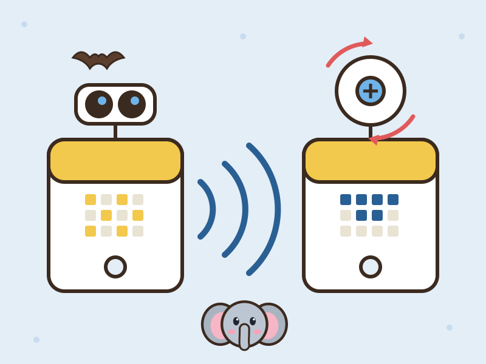

Prepping for Haunted House

For Activity 6, I picked one of four techniques to try out before building our Haunted House exhibit. I chose hub-to-hub communication: getting one SPIKE Prime hub to remotely trigger another, so a scare can be set off from across the room.
I set up two hubs, a sender and a receiver. The sender hub reads a distance sensor, and when it detects something, it sends a message to the receiver hub, which spins a motor connected to it.
The sender uses the spikecomm library’s Beacon to broadcast about ten times a second: 1 when something is within 50 mm of the sensor, and 0 otherwise. With an object close, my sensor read 49 mm, so 50 mm made a reliable trigger. Both hubs use the same tag, “!A”, so the receiver knows which messages to listen to. The receiver uses a Scanner that runs a function every time a message arrives: on a 1 it spins its motor at speed 500, and on a 0 it stops the motor.
Sender code
# Sender setup: Distance Sensor is on port A.
from hub import port
import distance_sensor
import time
from spikecomm import Beacon
# Your sensor reported 49 mm with an object close, so use 50 mm as the trigger.
CLOSE_DISTANCE_MM = 50
# The receiver must use this same tag.
beacon = Beacon("!A", verbose=True)
# Keep checking the sensor and sending close/not-close messages.
while True:
try:
# Read the distance in millimeters.
distance = distance_sensor.distance(port.A)
# Send 1 when close, or 0 when farther away or no valid reading.
if distance != -1 and distance <= CLOSE_DISTANCE_MM:
beacon.broadcast(1)
else:
beacon.broadcast(0)
except OSError as error:
# If the hub temporarily can't read the sensor, send a stop message.
print("Sensor read error:", error)
beacon.broadcast(0)
# Check again about ten times per second.
time.sleep_ms(100)Receiver code
# Receiver setup: motor is on port A.
from hub import port
import motor
import time
from spikecomm import Scanner
# The sender must use the same tag.
scanner = Scanner("!A", verbose=True)
# This runs when a message arrives from the sender.
def control_motor(values):
# Only use the message if it contains a value.
if len(values) > 0:
if values[0] == 1:
# Spin continuously while the sender reports that something is close.
motor.run(port.A, 500)
else:
# Stop when the sender reports that nothing is close.
motor.stop(port.A)
# Start listening for the sender's messages.
scanner.listen(control_motor)
# Keep this program alive so it can continue receiving messages.
while True:
time.sleep_ms(100)